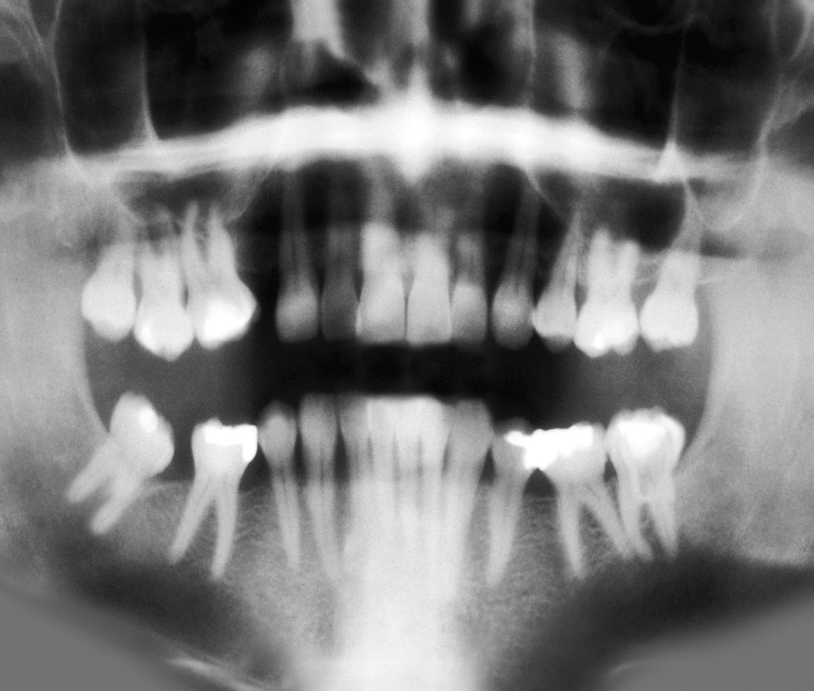

I am pleased to present a project that I completed for a client, which involved integrating third-party dental software into their accounting tools. The objective was to provide a seamless experience for managing dental health centers by integrating 3D scanners and other hardware into the existing accounting systems. Our client was managing multiple centers, and it was important to provide them with a solution that would streamline the accounting process and enable them to concentrate on delivering top-quality dental care.
To streamline the workflow for our client, I utilized a range of technologies that allowed for seamless integration and real-time data sharing. By automatically extracting diagnostic data from each scan or health check and storing it on a central file share hosted on-site in the health centers, I was able to provide our client with instant access to vital information from anywhere. This data could then be easily accessed from a dedicated remote monitoring and management system, allowing employees to work on accounting tasks remotely and collaborate in real-time.

We also implemented several security measures to ensure that the data remained secure at all times. Employees were required to securely login using technologies such as 2-factor authentication and VPN connections, ensuring that only authorized personnel had access to the data. This provided an added layer of security for our client and their patients, as sensitive information was kept confidential and only accessible to those who needed it. Overall, the integration of third-party dental software into accounting tools has resulted in a more efficient and secure workflow for our client, enabling them to focus on delivering the best possible dental care to their patients.